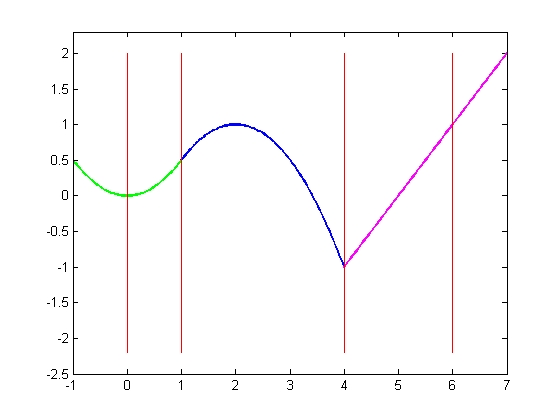
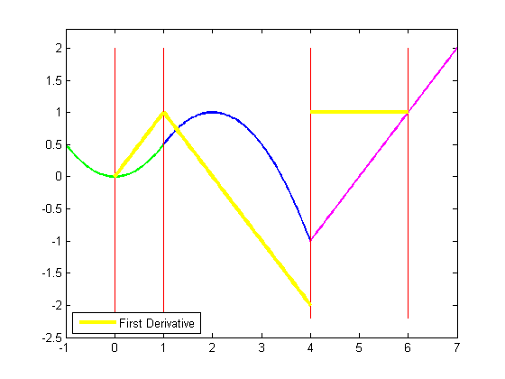
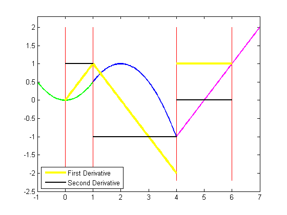
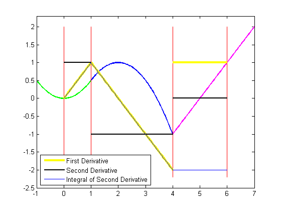
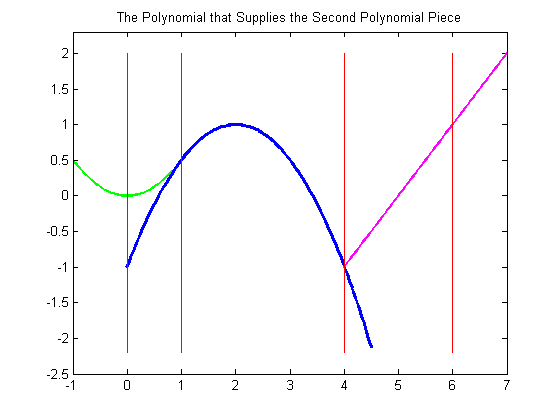
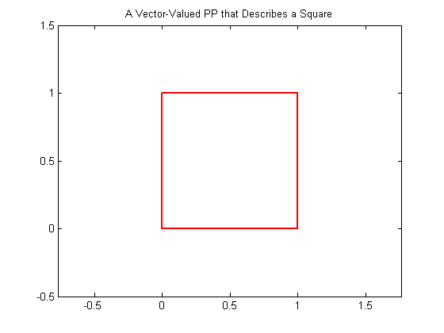
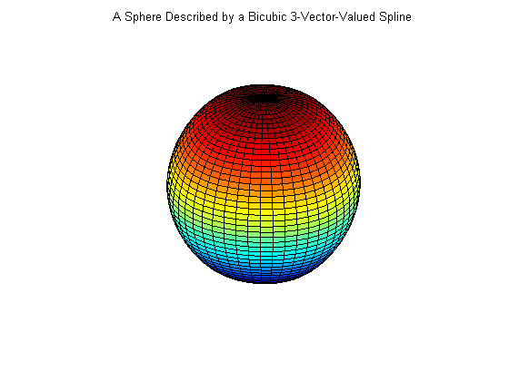

Introduction to the PPFORM
This is a quick introduction to the ppform of a spline, some of its uses, and commands in Curve Fitting Toolbox™ to work with the ppform.
Contents
Introduction
A (univariate) piecewise polynomial, or pp for short, is characterized by its break sequence, breaks say, and its coefficient array, coefs say, of the local power form of its polynomial pieces. The break sequence is assumed to be strictly increasing,
breaks(1) < breaks(2) < ... < breaks(l+1),
with l the number of polynomial pieces that make up the pp. In the figure below, breaks is [0,1,4,6], hence l is 3.
While these polynomials may be of varying degrees, they are all recorded as polynomials of the same order k, i.e., the coefficient array coefs is of size [l,k], with coefs(j,:) containing the k coefficients in the local power form for the j-th polynomial piece.
Here is an example of a pp made up of three quadratic polynomials, i.e., l = k = 3. The breaks are marked in red.
sp = spmak([0 1 4 4 6],[2 -1]); pp = fn2fm(sp,'pp') ; breaks = fnbrk(pp,'b'); coefs = fnbrk(pp,'c'); coefs(3,[1 2]) = [0 1]; pp = ppmak(breaks,coefs,1); fnplt(pp,[breaks(1)-1 breaks(2)],'g',1.8) hold on fnplt(pp, breaks([2 3]),'b',1.8) fnplt(pp,[breaks(3),breaks(4)+1],'m',1.8) lp1 = length(breaks); xb = repmat(breaks,3,1); yb = repmat([2;-2.2;NaN],1,lp1); plot(xb(:),yb(:),'r') axis([-1 7 -2.5 2.3]) hold off
The precise description of the pp in terms of the break sequence breaks and the coefficient array coefs is
pp(t) = polyval(coefs(j,:), t-breaks(j))
for breaks(j) <= t < breaks(j+1)
where, to recall,
polyval(a,x) = a(1)*x^(k-1) + a(2)*x^(k-2) + ... + a(k)*x^0.
For the pp in the figure above, breaks(1) is 0, and coefs(1,:) is [-1/2 0 0], while breaks(3) is 4, and coefs(3,:) is [0 1 -1]. For t not in [breaks(1) .. breaks(l+1)), pp(t) is defined by extending the first or last polynomial piece.
A pp is usually constructed through a process of interpolation or approximation. But it is also possible to make one up in ppform from scratch, using the command ppmak. For example, the pp above can be obtained as
breaks = [0 1 4 6]; coefs = [1/2 0 0 -1/2 1 1/2 0 1 -1]; fn = ppmak(breaks,coefs)
fn =
form: 'pp'
breaks: [0 1 4 6]
coefs: [3x3 double]
pieces: 3
order: 3
dim: 1
This returns, in fn, a complete description of this pp function in the so-called ppform.
Various commands in Curve Fitting Toolbox can operate on this form. The remaining sections show some examples.
Operating on Piecewise Polynomials
To evaluate a pp, use the fnval command.
fnval(fn, -1:7)
ans =
Columns 1 through 7
0.5000 0 0.5000 1.0000 0.5000 -1.0000 0
Columns 8 through 9
1.0000 2.0000
To differentiate a pp, use the fnder command.
dfn = fnder ( fn ); hold on fnplt(dfn, 'jumps','y', 3) hold off h1 = findobj(gca,'Color','y'); legend(h1,{'First Derivative'},'location','SW')
Note that the derivative of the example pp is continuous at 1 but discontinuous at 4. Also note that, by default, fnplt plots a ppform on its basic interval, i.e., on the interval [breaks(1) .. breaks(end)].
You can also use fnder to take the second derivative of a pp.
ddfn = fnder(fn, 2); hold on fnplt( ddfn ,'j', 'k', 1.6) hold off h2 = findobj(gca,'Color','k'); legend([h1 h2],{'First Derivative' 'Second Derivative'},'location','SW')
The second derivative is piecewise constant.
Note that differentiation via fnder is done separately for each polynomial piece. For example, although the first derivative has a jump discontinuity across 4, the second derivative is not infinite there. This has consequences when we integrate the second derivative.
To integrate a pp, use the fnint command.
iddfn = fnint(ddfn); hold on fnplt(iddfn, 'b', .5) hold off h3 = findobj(gca,'Color','b', 'LineWidth',.5); legend([h1 h2 h3],{'First Derivative' 'Second Derivative' ... 'Integral of Second Derivative'},'location','SW')
Note that integration of the second derivative does recover the first derivative, except for the jump across 4, which cannot be recovered, since the integral of any pp function is continuous.
You can obtain parts with the aid of the command fnbrk. For example
breaks = fnbrk(fn, 'breaks')
breaks =
0 1 4 6
recovers the break sequence of the pp in fn, while
piece2 = fnbrk(fn, 2);
recovers the second polynomial piece, as this plot confirms.
fnplt(pp,[breaks(1)-1 breaks(2)],'g',1.8) hold on fnplt(piece2, 'b', 2.5, breaks([2 3])+[-1 .5]) fnplt(pp,[breaks(3),breaks(4)+1],'m',1.8) plot(xb(:),yb(:),'r') title('The Polynomial that Supplies the Second Polynomial Piece') hold off axis([-1 7 -2.5 2.3])
Vector-Valued Piecewise Polynomials
A pp can also be vector-valued, to describe a curve, in 2-space or 3-space. In that case, each local polynomial coefficient is a vector rather than a number, but nothing else about the ppform changes. There is one additional part of the ppform to record this, the dimension of its target.
For example, here is a 2-vector-valued pp describing the unit square, as its plot shows. It is a 2D-curve, hence its dimension is 2.
square = ppmak(0:4, [1 0 0 1 -1 1 0 0 ; 0 0 1 0 0 1 -1 1]); fnplt(square,'r',2) axis([-.5 1.5 -.5 1.5]) axis equal title('A Vector-Valued PP that Describes a Square')
Multivariate Piecewise Polynomials
A pp in Curve Fitting Toolbox can also be multivariate, namely, a tensor product of univariate pp functions. The ppform of such a multivariate pp is only slightly more complicated, with breaks now a cell array containing the break sequence for each variable, and coefs now a multidimensional array. It is much harder to make up a non-random such function from scratch, so we won't try that here, particularly since the toolbox is meant to help with the construction of pp functions from some conditions about them. For example, the sphere in this figure is constructed with the aid of csape.
x = 0:4;
y = -2:2;
s2 = 1/sqrt(2);
v = zeros(3,7,5);
v(3,:,:) = [0 1 s2 0 -s2 -1 0].'*[1 1 1 1 1];
v(2,:,:) = [1 0 s2 1 s2 0 -1].'*[0 1 0 -1 0];
v(1,:,:) = [1 0 s2 1 s2 0 -1].'*[1 0 -1 0 1];
sph = csape({x,y},v,{'clamped','periodic'});
fnplt(sph)
axis equal
axis off
title('A Sphere Described by a Bicubic 3-Vector-Valued Spline')
 While the ppform of a pp is efficient for evaluation, the construction of a pp from some data is usually handled more efficiently by first determining its B-form, i.e., its representation as a linear combination of B-splines.
For this, look at the demo Introduction to the B-form.